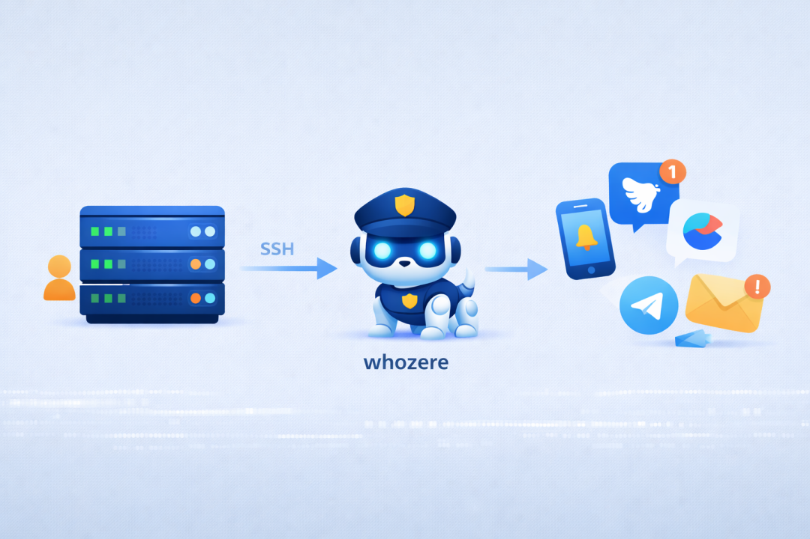
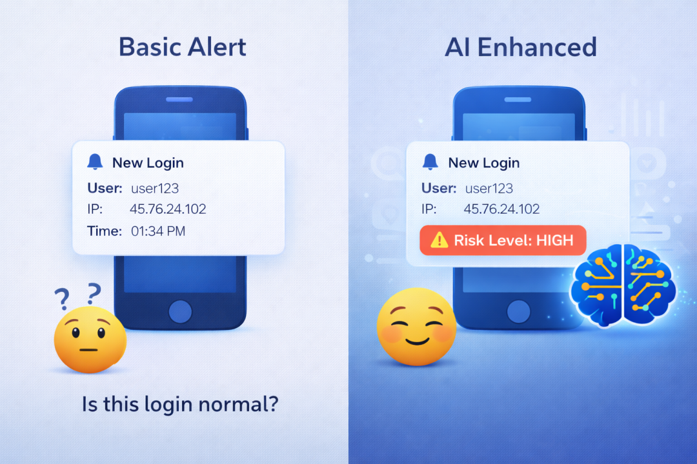

现在几乎每个家庭都会装一两个监控摄像头。
门口放一个，客厅放一个，有人来了手机推送一下，出门在外也能看看家里的情况。这种安全感，花几百块就能买到，性价比极高。
但你有没有想过：你的服务器呢？
家里来了陌生人，摄像头会推送通知。那台跑着你博客的 VPS、存着代码的云主机、甚至家里 24 小时开机的 NAS——有人登录了，你知道吗？
于是我写了一个小工具，然后将它接入了 OpenClaw，让 AI 也有了自己的看门狗。
whozere：谁在这儿？
whozere（Who's here?）是一个跨平台的登录检测工具，支持 macOS、Linux 和 Windows。
它做的事情很简单：
- 监控系统登录事件
—— SSH、终端、远程桌面、屏幕共享等 - 实时推送通知
—— 支持 Webhook、Telegram、飞书、钉钉、企业微信、邮件等 - 轻量无感
—— 后台运行，资源占用极低
安装也很简单（以 Linux/macOS 为例）：
# 一键安装
curl -fsSL https://raw.githubusercontent.com/xsddz/whozere/main/scripts/install.sh | bash
# 编辑配置（填入你的通知渠道，比如飞书机器人）
sudo vim /usr/local/etc/whozere/config.yaml
# 设置开机自启
whozere-service install && whozere-service start配置好之后，每当有人登录你的服务器，你就会收到这样的通知：
🔔 登录提醒
用户: root
主机: my-vps
时间: 2026-02-08 14:32:15
IP: 192.168.1.100
终端: ssh从此，服务器的"门口"也有了监控。

openclaw-skill-whozere：AI 的看门狗
有了 whozere 之后，我又在想：能不能更进一步，让 AI 也能参与进来？
比如，我想问问 AI："最近一周都有谁登录过我的服务器？"
或者，让 AI 帮我判断一下这次登录是不是可疑的？
于是我又写了一个 OpenClaw 技能：openclaw-skill-whozere。
它做的事情也很简单：
- 接收登录告警
—— whozere 把消息推给 OpenClaw - 多渠道转发
—— Telegram、Slack、Discord、WhatsApp……想用哪个用哪个 - AI 风险分析
（可选） —— 自动判断这次登录是否异常 - 随时查询
—— 问一句"最近有谁登录过"，AI 给你答案
安装也不复杂：
# 安装技能
openclaw skills install github:xsddz/openclaw-skill-whozere然后在 whozere 的配置里加一个 Webhook，指向 OpenClaw：
notifiers:
- type: webhook
name: "OpenClaw"
enabled: true
config:
url: "http://127.0.0.1:18789/api/webhooks/whozere"重启 whozere，搞定。
从此，登录告警会发到 OpenClaw，再由 OpenClaw 推给你的 Telegram 或其他聊天工具。
如果开启了风险分析，告警还会多一段 AI 的判断：
🔔 登录提醒
用户: root
主机: production-db
时间: 2026-02-08 03:45:30
IP: 185.234.xx.xx
终端: ssh
⚠️ 风险评估：高
- 异常登录时间（凌晨 3 点）
- 陌生 IP 地址
- 高权限用户登录
建议：立即确认此次登录。不用自己盯着看，AI 帮你把关。

最后
两个小工具都开源了：
- whozere
：https://github.com/xsddz/whozere - openclaw-skill-whozere
：https://github.com/xsddz/openclaw-skill-whozere
家里的门你肯定不会忘了锁，服务器的门，也该有个看门狗。